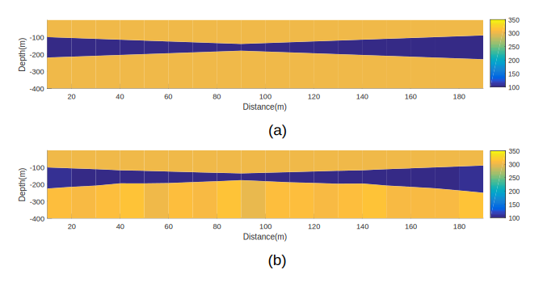
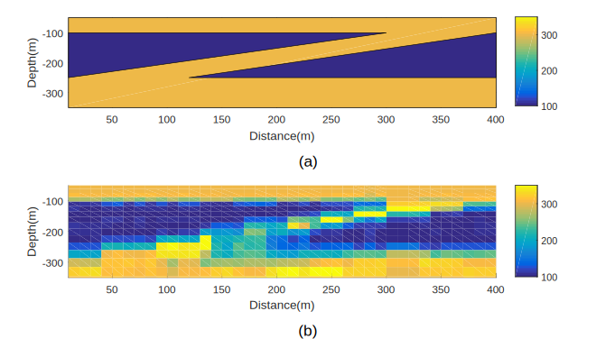
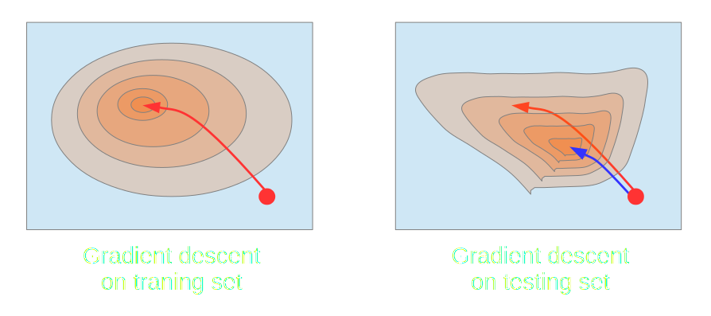
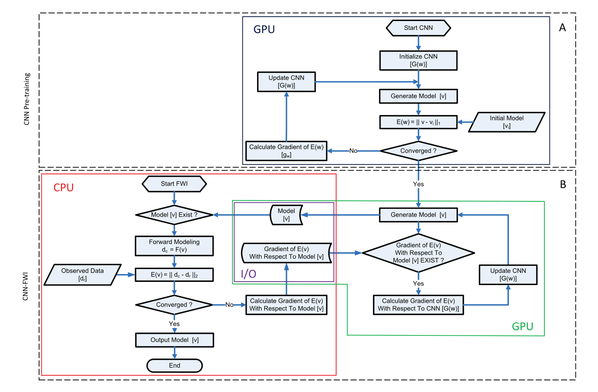
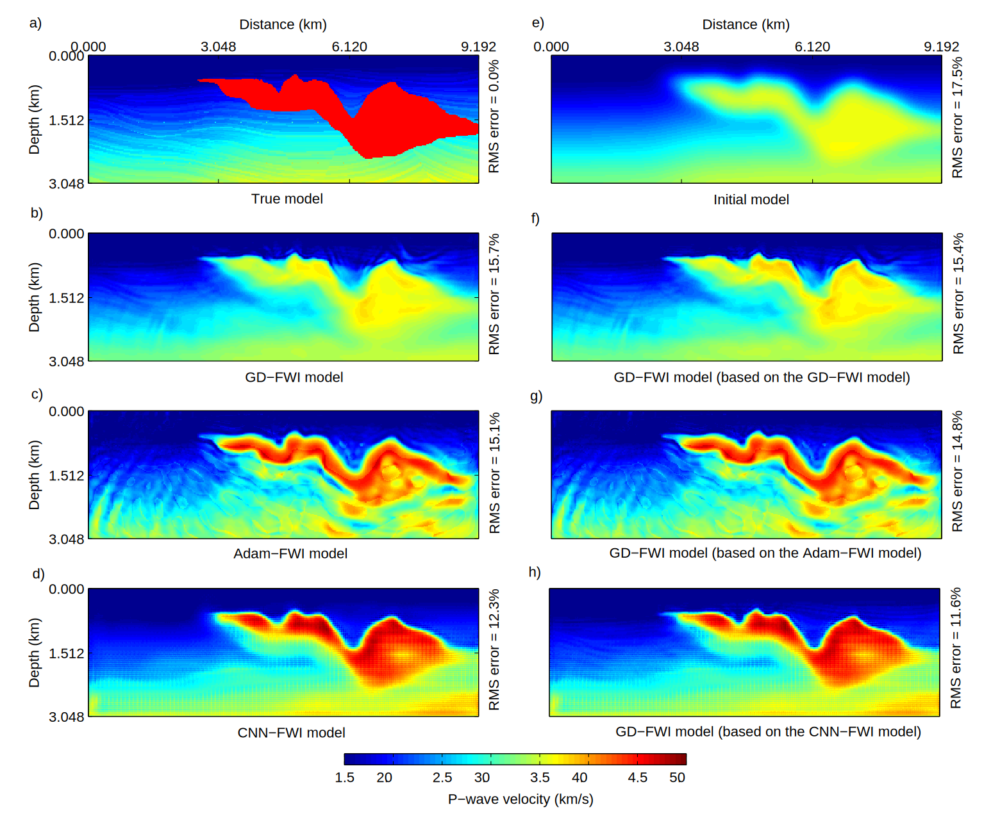
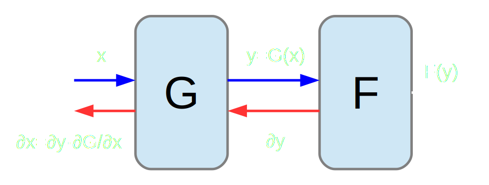

Notes on May 05, 2019
| Date: | May 5, 2019 |
|---|---|
| Last Updated: | May 8, 2019 |
| Categories: | |
| Tags: |

Contents
Introduction
In this article, we would introduce two SEG-2018 expanded abstracts. The first one is about a new learning algorithm for transient electromagnetic method (TEM) inversion, and the second one is about using deep learning to solve FWI. In the following parts, we would discuss about the problems of the two papers and analyze which parts are not well proved. The two papers are listed below.
Algorithm for geosteering inversion
Theory
In traditional method, TEM inversion is based on a theoretically supported forward model, where the underground formation is divided into several layers, the earth model parameters include
- ${\rho}_i$: resistivity of the ith layer.
- $t_i$: thickness of the ith layer.
- $R$: radius of transmitting loop.
- $I$: strength of transmitting current.
- $z$: height of transmitter.
- $h$: height of the receiver.
The above parameters are usually unknown in practical problems, while the following parameters could be defined by other parameters and prior information.
- $r_{te}$: reflection coefficient.
- $\lambda$: beam of electromagnetic wave.
- $\omega$: angular frequency.
- $r$: center offset between the transmitter loop and receiver coil.
Then the inverse problem could be formulated as
where $F$ is the forward model, $\mathbf{x}$ contains the earth model parameters and $\mathbf{d}_{\ast}$ include observed measurements. Hence we know $S$ is the data misfit which should be minimized during the optimization. Denote that $\mathbf{d} = F(\mathbf{x})$, generally the expansion of $S$ could be written as
where
Solving the above stationary point problem, we could get that
The target of this paper is aimed at learning the matrix $\mathbf{K}$, which contains both the first-order and second-order derivatives.
To perform the learning process, the author build a training set which contains a lot of training data pair $(\mathbf{x}^{(i)},~ \mathbf{d}^{(i)}_{\ast})$. Then the training algorithm could be written as
- Select $\mathbf{x}_0$ as initial model.
- $\mathbf{x} = \mathbf{x}_0$.
- For $m = 1,~2,~,3,~\cdots,~M$:
- $\mathbf{K}_m = \arg \min\limits_{\mathbf{K}} \left( \sum_{j=1}^N \lVert \Delta \mathbf{x}^{(j)} - \mathbf{K} \Delta \mathbf{d}^{(j)} \rVert^2_2 \right)$, where $\Delta \mathbf{x}^{(j)} = \mathbf{x}^{(j)} - \mathbf{x}$ and $\Delta \mathbf{d}^{(j)} = F(\mathbf{x}) - \mathbf{d}^{(j)}_{\ast}$.
- $\mathbf{x} = \mathbf{x} + \frac{1}{N} \sum_{j=1}^N \mathbf{K}_m \Delta \mathbf{d}^{(j)}$.
After training, we would get a series of derivatives $\mathbf{K}_m$. After that, in the testing process, we would not need to calculate derivatives from the forward model $F$. Assuming that we have a group of unknown measurements $\mathbf{d}^{(j)}_{\ast}$. Then the testing phase could be defined as
- Select $\mathbf{x}_0$ as initial model, which should be the same as that in training phase.
- $\Delta \mathbf{d} = F(\mathbf{x}) - \mathbf{d}_{\ast}$, $\mathbf{x} = \mathbf{x}_0$.
- For $m = 1,~2,~,3,~\cdots,~M$:
- $\mathbf{x} = \mathbf{x} + \mathbf{K}_m \Delta \mathbf{d}$.
- If RMS is lower than threshold, break.
- $\Delta \mathbf{d} = F(\mathbf{x}) - \mathbf{d}_{\ast}$.
Here we show two results of the proposed method:
| True model and model-based SDM inversion results. (model based) |
|---|
|  |
| True model and model-based SDM inversion results. (pixel based) |
|---|
|  |
Problem
The main feature of this paper is that the parameter-free descent direction $\mathbf{K}_m$ could be derived from the training set. However, this feature is also the main problem of this paper, because actually $\mathbf{K}_m$ is not fixed for all measurements in any non-linear problem.
Consider that the derivation of $\mathbf{K}_m$, we would know that
Then we would find, if and only if $\mathbf{K}$ is a constant, i.e. the problem is totally linear, $\mathbf{K}$ would not change according to the measurements $\mathbf{d}_{\ast}$, because $\mathbf{J}(\mathbf{x})$ is a function of earth model $\mathbf{x}$. If the model is non-linear, then $\mathbf{J}$ would be different for any different $\mathbf{d}_{\ast}$.
In practice, the descent trajectory of $\mathbf{x}$ would not be the same for the training set and the testing data if we apply the traditional gradient descent methods. However, in this method, the author apply the same direction of training phase on the testing phase. This scheme would not get converged results unless the training set and the testing data are highly similar. The following figure show why the testing phase could not converge well in some cases.
| A schema for training and testing. We use red line to show the proposed method and blue line to show the traditional method. |
|---|
|  |
CNN-FWI
Theory
In this paper, the author propose a CNN to perform FWI method. The main idea of this paper is very similar to our method, while the main difference of this paper is that the network in this paper does not have any input parameter. All of the values in input layer of this network are set as constant (1).
Training such a network could be divided into two phases. The following part show the workflow of training phase.
| Flow chart of training CNN. |
|---|
|  |
Training this network could be described by:
- Phase 1:
- Initialize the network parameters by normal distribution. The input layer of the network is set fixed by 1.
- Using the initial guess of the velocity model $\mathbf{v}_i$ to train the network by model misfit $\lVert \mathbf{v} - \mathbf{v}_i \rVert^2_2$, where $\mathbf{v} := \mathcal{G}(\mathbf{w})$ is the network prediction.
- Phase 2:
- Denote the error function (which is also the data misfit) as $\mathcal{E} := \frac{1}{2} \lVert P (\mathbf{u}) - \mathbf{d} \rVert^2_2 = \frac{1}{2} \left\lVert P \left( \mathbf{M}^{-1}(\mathbf{v}) \mathbf{f} \right) - \mathbf{d} \right\rVert^2_2$, where P is an operator that extracts the amplitudes at the receiver positions from the frequency-domain wavefield $\mathbf{u}$, and $\mathbf{d}$ is the frequency-domain complex-valued observed data. $\mathbf{M}(\mathbf{v})$ is the impedance matrix containing the velocity model $\mathbf{v}$ while $\mathbf{u}$ is the frequency source.
- Training the CNN by data misfit $\mathcal{E}$, the back-propagation could be described by two steps: $\nabla_{\mathbf{w}} \mathcal{E} (\mathbf{w}) := \nabla_{\mathbf{v}} \mathcal{E} (\mathbf{v}) \frac{\partial \mathbf{v}}{\partial \mathbf{w}}$.
The results are shown below. The author compare proposed CNN-FWI with other methods. Note that the CNN-FWI is trained by Adam, but its results are much smoother than Adam-FWI method.
| Comparison of different methods. |
|---|
|  |
Problem
There is no doubt that the proposed method is very attractive compared to other methods. However, we have to say that the method in this paper is very irregular. We could get the abstract structure like this:
| A schema for the abstract workflow. |
|---|
|  |
We would find that, if we want to get the gradient $\nabla \mathbf{x}$, we have to get the gradient $\nabla \mathbf{y}$ firstly. In another word, the precision of optimizing $\mathbf{x}$ could not exceed that of optimizing $\mathbf{y}$. Hence we would find that, although the results of the proposed method is better (smoother), actually the better results are acquired by reducing the precision of optimizing $\mathbf{y}$. The effect is alike with regularization.
Compare to training $\mathbf{y}$ directly, training $\mathbf{x}$ requires us to adjust much more parameters, while each parameter would only influence the results a little bit. If we learn $\mathbf{y}$, the update happens locally for each iteration. However, if we learn $\mathbf{x}$, since the parameter is in latent space, each iteration would exert influences on all velocity model. Hence, we could know that why the CNN-FWI could get smoother results.